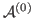
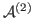

Next:
[6,5]
Up:
Python results: Hamaker coefficents
Previous:
[29,0] dielectric response spectrum,
Contents
Fully retarded Hamaker Coefficients
Subsections
[6,5]
[6,5] terms of Matsubara sum
[6,5] Log-log plot of

and

[9,1]
[9,1] terms of Matsubara sum
[9,1] Log-log plot of
and
[29,0]
[29,0] terms of Matsubara sum
[29,0] Log-log plot of
and
Jaime 2014-04-09